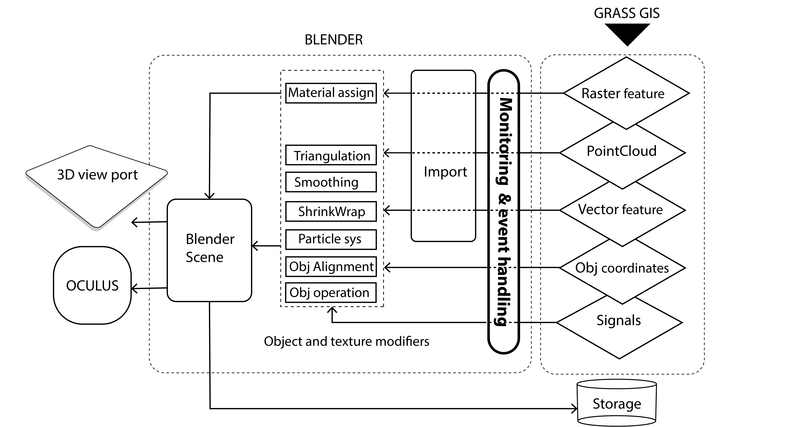
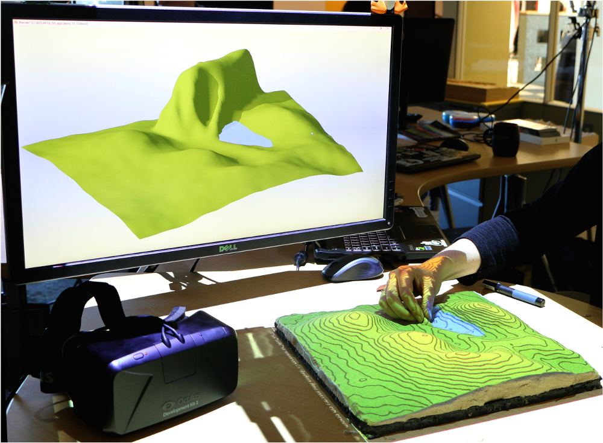

NCGIS 2017
Immersive Tangible Landscape
Payam Tabrizian, Anna Petrasova, Brendan Harmon, Vaclav Petras, Helena Mitasova
North Carolina State University
Good afternoon, my name is Anna and together with Payam we will talk today
about Immersive Tangible Landscape,
The talk is presented by the GeoForAll Laboratory at the
Center for Geospatial Analytics (CGA), North Carolina State University
CGA is an interdisciplinary research and education center with focus on
geospatial computing, modeling, analytics and geovisualization.
geospatial.ncsu.edu
which is a project we developed as members of GeoForAll laboratory
to make landscape design process more effective through the use of Tangible
interaction, Immersive virtual environments, and geospatial analytics.
Our lab is part of the Center for Geospatial Analytics, which focuses
on educationa nd interdisciplinary research, and has been instrumental in
making this research happen.
Tangible Landscape
Immersive Virtual Environment (IVE)
In the first part of this talk, I will give you an overview of Tangible Landscape,
a tangible interface for GIS, which we have been developing and applying for couple years now,
and Payam will then show you the newest coupling of TL with Immersive virtual environments,
and explain how this coupling enhances our current design approaches.
Motivation for Tangible Interfaces for GIS
Interaction through mouse, keyboard and display does not encourage creativity.
Manipulating computer models is not intuitive and requires specialized software and training.
Collaboration is restricted as typically only one user at a time can navigate and modify models.
So why are we interested in Tangible interfaces?
I am sure this photo shows a familiar setting -
we often get together around a screen to solve a geospatial problem or use mouse or touch
to manipulate 3D data on 2D screen. Such manipulation of data often requires knowledge of a specific,
often complex software, usually only single person can access the data
creating barriers to collaboration and creativity.
Tangible interface linked with GIS
Tangible Geospatial Modeling System (TanGeoMS)
L. Tateosian, H. Mitasova, B. A. Harmon, B. Fogleman, K. Weaver, and R. S. Harmon, “TanGeoMS: tangible geospatial modeling system.,”
IEEE Trans. Vis. Comput. Graph., vol. 16, no. 6, pp. 1605–12, 2010.
More than 10 years ago, researchers at the MIT Media Lab tried
to adddress this issue and developed early prototypes
of environments that coupled 3D physical models with analysis.
My advisor Dr. Helena Mitasova developed a similar system, but linked to GIS
to support modeling and analysis
of real world landscapes based on GIS data. The system used laboratory lidar and it was very expensive,
limiting its broader use.
Kinect-based systems
Augmented Reality Sandbox by KeckCAVES
Expensive laser scanners replaced by low cost Kinect
Image source:
http://idav.ucdavis.edu/
The breakthrough for this approach came with a new generation of low cost 3D sensors,
specifically Kinect. Several systems were developed using Kinect,
the best known among them
is probably the Augumented sandbox by Keckcaves developed at UC Davis.
You might have seen this systems at museums or conferences where it often generates a lot of excitement.
Tangible Landscape: real-time coupling with GIS
VIDEO
With Tangible Landscape you can hold a GIS in your hands - feeling the shape of the earth, sculpting its topography, and directing the flow of water.
We were able to take advatage of the fast and relatively accurate 3D scanning by Kinect
and developed the first system with real-time coupling of a 3D physical model, with GIS.
This video should give you a basic idea of the interaction - using a model of a real landscape,
we can modify the topography and get instant feedback on how our changes impact water flow and ponding.
How it works
Tangible Landscape couples a digital and a physical model through a continuous cycle of 3D scanning, geospatial modeling, and projection
So how does the system work? In the previous slide you have seen the 3D model of a landscape.
This model is continuously scanned by the kinect, the scanned data are imported into GRASS GIS,
where a 3D digital elevation model is computed and a selected analysis or modeling is performed -
in our case contours are derived and water flow and ponding is simulated. A composite image
of the selected map layers is then projected over the model. In this way the system couples
the digital and physical models in a continuous cycle of scanning, modeling and projection,
providing the user continuous feedback.
Software
So let’s have a look at the software behind Tangible Landscape. Tangible Landscape is built around GRASS GIS platform. GRASS GIS is an open source, multiplatform GIS offering a variety of simple to complex tools for geospatial analysis, but also remote sensing, network analysis or hydrology.
Tangible Landscape has 3 main components. First we have a GRASS GIS add-on module r.in.kinect, which continuously receives point cloud from Kinect and processes this data into a digital elevation model.
Then we have Tangible Landscape plugin integrated into GRASS GIS graphical user interface which serves for controlling Tangible Landscape, specifically the scanning parameters and timing.
The third component is a Python file with geospatial analyses organized in functions called for each new scan. We developed a library of functions you can use right away, but you can also develop your own geospatial workflows using GRASS GIS Python API.
System cost
Type Product example Cost Software Tangible Landscape plugin for GRASS GIS $0 Computer System76 Oryx Pro $1500 Projector Optoma ML750 WXGA LED $500 3D sensor Xbox One Kinect $100 Kinect Adapter for Windows $50 Stand 2 x Avenger 40-Inch C-Stand with Grip Kit $400 2 x Avenger 3-Inch Baby Wall Plate $20 Peripherals HDMI cable, extension cord $20 Modeling media Waba Fun Kinetic Sand 11 Lbs $50 Total $2640
Interactions
surface
points
lines
areas
areas
You have so far seen only sculpting sand with our hands, where we modify the continuous elevation surface. However some applications require different types of input data, such as objects. To make Tangible Landscape flexible in this regard, we developed multiple ways to interact with the physical models. Here we use a wooden marker to specify point locations on the landscape, for example view points or trailheads. Recently we have started to experiment with using laser pointer to draw objects, such as points, lines or polygons. Another option is to use colored sand to create polygons where the color represents certain attribute of the polygon and the height of the sand can represent intensity of that property. The most recent interaction we are testing now is creating areas using colored felt or paper of different shapes placed on the model.
These interactions can be combined to achieve intuitive interactions for particular application. Now I will show you some of the applications we developed for different study sites, using different geospatial models and each of them has different type of interaction.
Applications: visibility
Your browser does not support the video tag.
Visibility analysis
Topography is directly linked to visibility, so here we explore viewsheds at our campus. The physical model from sand represents digital surface model with canopy and we place the markers to specify viewpoints. Once the marker is detected, the viewshed is dynamically computed and visualized, here the visible areas are represented by yellow color.
Applications: urban growth
Your browser does not support the video tag.
Simulation of urban growth scenarios with FUTURES model
Here we switch from disease spread to urbanization application. We coupled TL with urban growth model called FUTURES implemented as a GRASS add-on and developed here at North Carolina State University. By placing colored sand we create red zones which attract new development or green zones for conservation. The height of the sand can represent the intensity - how much the zone attracts the development. Then we identify the polygons and rerun the urban growth model with these new conditions.
Now you can observe the animated growth of the city as predicted by the FUTURES based on the specified interventions.
Serious games: coastal flooding
Save houses from coastal flooding by building coastal defenses
Structured problem-solving with rules, challenging objectives, and scoring
Recently there has been a lot of excitement about serious games and how we can use them to engage public in science. We thought Tangible Landscape would be a great tool for serious gaming, so let’s look at a coastal flooding game. We prepared this game for a public event and people playing the game were trying to protect the homes on the coast when a foredune is breached during a storm surge. With limited sand budget they tried different ways of building barriers and they learned pretty quickly that a breach in one place can cause flooding of houses which are far away from the breach.
Coupling Tangible Landscape with IVE
Better communicating the implications of landscape change
Including design attributes in landscape planning process
Assessing trade-offs between ecological and experiential quality (e.g., preferences, pyschological well-being)
As you have seen so far, Tangible Landscape represents the landscape as a projection-augmented model which is perceived in a bird’s-eye perspective. We aimed to complete the picture by representing the landscape similar to how we perceive in human-scale.
So why it is important to include human perception ?
First, this allows for a more tangible understanding and communicating the implications of landscape change that are important components in decision making and stake-holder participation. What it means if some areas is flooded ? or how your living environment looks like after some restoration intervention ?
Second, it allows bringing designers into the table and include attributes that they care about, like composition of landscape, coherence and etc.
Third, given our growing understanding about the impact of landscapes on individual’s mental and physical health , it is is imperative to find those sweet spots where the ecological functioning and human-perception measures such as aesthetic evaluation and landscape preferences are balanced.
Immersive Virtual Environments (IVE)
Immersive Virtual Environements surround the user in images, video or other stimuli to generate a perception of being physically present in a non-physical world.
High degree of "presence", more robust asessement of human perception and preferences
http://marclee.io/en/10-000-moving-cities-same-but-different-vr/
IVE’s surround user with continous stream of stimuli, tied to the users head or body movement , creating a feeling being physically present in a virtual world.
They are shown to elicit a high degree of presence and immersion, and very robust tools for assessing perceptions.
The coupling rationale
Real-time updating a georeferenced 3D model of the landscape based on user interaction with Tangible Landscape
Updating the attributes (shape, position) of 3D objects (e.g., plants) and surfaces (e.g., terrain) with their corresponding tangible objects
Enabling user to control the viewpoints (camera position) and animation (e.g., walkthrough, flythrough)
The coupling concept is based on adaptive 3d modelling framework. The idea was to generate a georeferenced 3D world of the under-study landscape, in which all the features and behavior of 3D elements like trees, buildings and surfaces are linked to their corresponding tangible object in tangible landscape. In this way, as users manipulate the tangible model and pieces, they can see, in real time, the changing landscape rendered on display or through virtual reality headsets like oculus.
In addition to the automation adaptation aspect, we wanted to allow users to control the camera and animation so they can step into and navigate in their desired location in the landscape.
Physical setup
For implementing the concept, we added a 3D modeling and game engine software, called blender, to the tangible landscape setup with outputs to a display and an immersive virtual reality headset.
What is Blender? Why Blender?
Free and open source 3d modelling and game engine software
Easy scripting (Python)
GIS and Virtual reality plugin
High-quality real-time rendering and shading
Blender is a free and open source program for modeling, rendering, simulation, animation, and game design. The software has an internal python-based IDE and add-ons for importing GIS data to georeference the scene, and displaying the viewport in HMDs. It also allows realtime high-quality rendering and shading.
Software Architecture

Interaction: hand
3D processing: terrain GeoTIFF raster and water polygon
Simulation: simple hydrologic model

Briefly describing the workflow, GRASS GIS and Blender are loosely coupled through file-based communication. As user interacts with the tangible model or objects, GRASS GIS sends a copy of the geo-coordinated information or simulation to a specified system directory.
We implemented a monitoring module in blender scripting environment that constantly watches the directory, identifies the type of incoming information, and apply relevant operations needed to update the 3d model. The input data can range from geospatial features like a raster or a point cloud, simple coordinates as a text file, or signals that prompt a command such as removing an object from the scene.
Interaction: laser pointer
3D processing: importing line feature to update camera position
For example, when landscape is manipulated with hand, a geotiff raster and a polygon related to water is processed.
Interaction: laser pointer
3D processing: importing polygon features to populate trees
While anytime during the interaction user can freely navigate in the environment using the mouse, they can also use a laser pointer to delineate their prefered vantage point.
Lines created with laser pointer can be transferred as a line feature denoting user’s desired viewpoint and direction of view. The scene camera is then relocated to the line’s starting point and the direction of view is aligned to the line’s endpoint.
Experiencing the landscape through IVE
Interaction: laser pointer
Aslo, Polygon features drawn with laser-pointer can be defined as patches of trees to populate predefined diversity and density of vegetation.
The viewport is continuously displayed in both viewport and headmounted display, so users can pick up the headset and get immersed in their prefered views.
VIDEO
For demonstration of the application in action, we will go through a small video of our first prototype where our colleague, Vatslav, and Anna collaboratively design a landscape. Through the design process, please note that how the developments enables the dialogue between ecological assessment and aesthetic evaluation.
Ponding and Landscape design
Vatslav starts by sculpting the topography to create retention ponds to address stormwater management requirements of the site . As as he carves the landscape, Water flow and accumulation simulations are continuously projected onto the physical model. In the same time, point-cloud and water polygon is transferred to update the tangible model.
Then he collaboratively works with anna to place the excavated soil on-site to create artificial mounds that provide overviews to the site.
For showing human-scale views we took benefit of the laser pointer interaction. You can delineate the desired view-point and orientation in the landscape which is processed as a line feature as sent to blender to update the camera location and orientation. Additionally, Users can explore the landscape with the mouse or with the immersive headset.
Vegetation design.
Aslo, Polygon features delineated with laser-pointer can be defined as patches of trees to populate predefined diversity and density of vegetation. In this demonstration, only one type of tree is used. However, the blender script can be adjusted to detect various types of plant species. In our current current revisions we have added shading and textures improve the realism of the scene.
Trail Design
Tangible objects are also processed in the application. For instance here, wooden cubes represent checkpoints that denote a recreational trail. Grass GIS, simulates the optimal route using an algorithm that simulates the least cost walking path. But Vatslav want to complement the trail experience and adjusts it to meander within the new forested patches.
The trail line feature not only represent the trail but also processed in Blender as a walktrough simulation that can viewed on screen or in HMD.
Future work
Landscape planting design
Habitat connectivity and landscape preferences in woodland patches